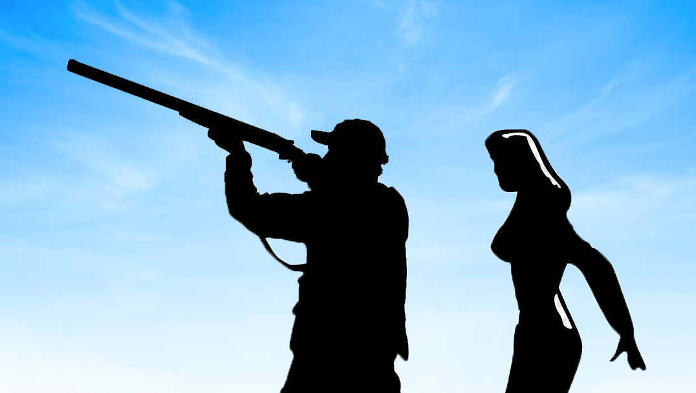
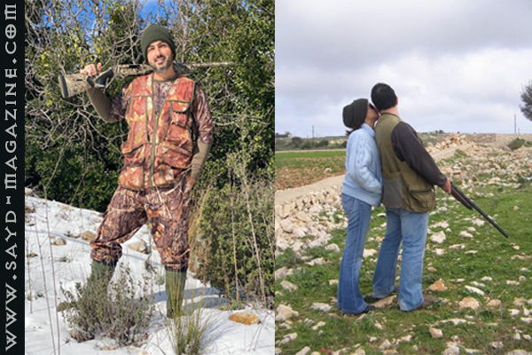

من حكايات الصيد ونهفاته، لا بدّ من مرور طريف على رأي "الزوجات" ومفهومهنّ لرحلات الرجال المتكرّرة والكثيرة في موسم الصيد
فكان لـ"صيد" عدّة لقاءات مع "زوجاتهم"

* موسم الصيد من أجمل الهوايات الرياضية، يشعر الشخص بالراحة النفسية بعيدًا عن الضجة. إنه موسم كآبة بالنسبة لي، لأني لا أستطيع مرافقة زوجي بسبب طبيعة عملي.
* ما أُحبه في هواية زوجي أنه يُمارس رياضة المشي خلال الصيد، وما أكرهه هو ذهابه أحيانًا وحيدًا إلى مناطق بعيدة في ظل الظروف الأمنية الصعبة التي يمر بها البلد.
* أسأله: اسم الله عليك هيدول كلن اليوم؟ يّلا بلّش نتف تَ ناكل.
* كلا لا مشكلة لرحلة صيد خارج البلاد، لأنها تجربة جديدة ولم يسبق له أن فعلها.
جويل زغيب: "يخليلي إمّي، موفّرة علينا النتف والطبخ"
* قبل أن نتزوّج وهو يُمارس هوايته "المقدّسة".
* للصراحة يمرّ موسم الصيد بكآبةٍ عظيمة، كان ذلك قبلًا وقبل أن أعي مدى أهمية الصيد بالنسبة إليه، كما يعود الفضل باستيعابي ذلك إلى عمّتي "نوال".
* قبل الزواج وقبل إنجابي أولادنا، كنت دائمًا أشاركه رحلات الصيد، كنت أتعب من استيقاظي باكرًا، لكن سرعان ما أنسى ذلك، خاصةً عندما أرى مدى فرحته بمرافقتي إياه.
* "ألله يخليلي إمّي، موفّرة علينا مشاكل النتف والطبخ".
* بالعكس، أطمح لرؤيته في سفرةٍ خاصة بالصيد، لأنني أعلم كم سيكون سعيدًا.
* ما أُحبّه في هذه الهواية، أنه بات يصطحب إبننا "بيتِر" معه، فأنا فخورة بزوجي، لأن ابني يعيش أجمل مراحل حياته معه.
* هذه الهواية طاقة إيجابية في حياتي وعائلتي، الابن يُرافق أباه، وأنا وابنتي المراهقة نستمتع بوقتنا.
"و عَ قولِة جوزي: موسَم وبيخلص، والموسَم صار أجمل نمضّي مع العَيلة".

* ما يستهويه رحلة الصيد الطويلة: التخييم مع أصدقائه في الطبيعة والصيد، وطبعًا في الخريف وليس في شهر التزاوج.
* موسم الصيد لا يعني لي شيئاً. أما أنطوني فينتظر الموسم.
* لا أُشاركه رحلات الصيد، بحُكم أُمومتي.
* حين يأتي من الصيد أقول له: "مين رح ينتُف العصافير؟ إنتَ بتعرف أنا ما بدق فيهن"... فيكون الأمر إمّا أن نُجيّرهم إلى أحد، أو أغلب الأحيان يعود فارغَ اليدين.
* لا مُشكلة في السفر لقضاء رحلة سياحية يتخلّلها رحلة صيد، ولكن ما أسأله لنفسي: ليش بدو يسافر للصيد ما دام بيقدر يتصيّد بلبنان؟
لوسي نسيم: "شاريهم أو مْصيدهم؟"
* بادئ الأمر كان بمثابة كآبة، أمّا الآن فـ"أكييييد" راحة.
* عندما أُفكّر بالنهوض باكرًا، أعود إلى فراشي الدافئ. ولكن أحيانًا أُحب مرافقته.
* أوَّل ما يخطر على رأسي، إذا كان صيده موفّقٌ، وثانيًا أسأله ممازحة: "شاريهم أو مْصيدهم؟".
* طبعًا لا مشكلة بالسفر في رحلة صيد، لأنني أعلم كم سيكون فرِحًا.
ملاك دمج: "بس يا ريت بتاكلهم"
* الصيد هوايته وشغفه. كيف وهو يُمارسها بالطريقة الصحيحة والسليمة.
* أبدًا ليست فترة كآبة. هي مناسبة للزوج للخروج من الجوّ الأُسري والروتين اليومي.
* أُحب رحلات الصيد والطبيعة، ولكنني أخاف ولديّ رهبة التعامل (Zoophobia) مع الحيوانات.
* عند عودته من رحلة صيد، أُبادره: بتتصيد بس"يا ريت بتاكلهم".
* أكره أنه يتعب ويُرهق نفسه عند أي رحلة صيد، لأنه يستغل كلّ لحظة وكل تفصيل. والشيء الذي أُحبّه، عند عودته نجلس كعائلة ونُشاهد مقاطع فيديو أخذها خلال رحلته.
* طبعًا لا مانع لديّ، لأنني أعلم مدى عِشقه لهذه الهواية، ولكن أخاف عليه عندما يكون في بلدٍ آخر.